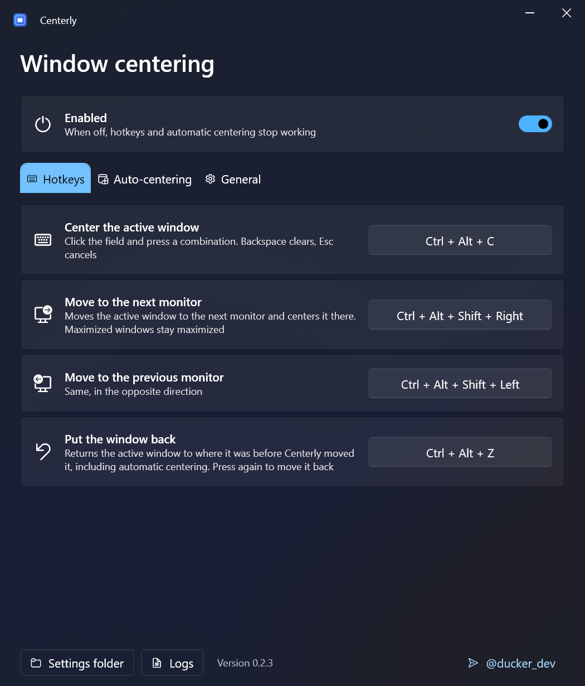
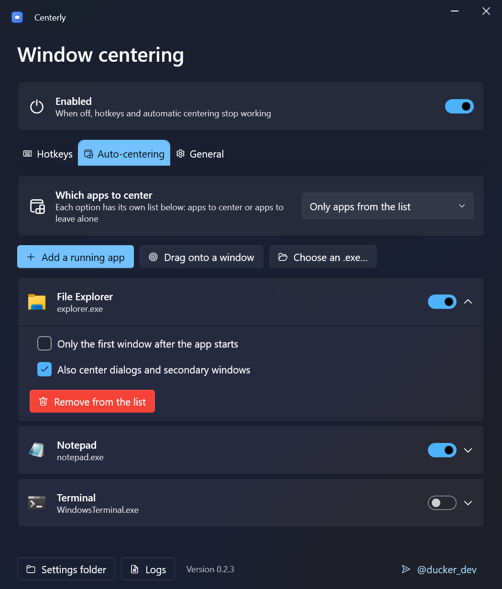

Every window, right in the center
Centerly centers windows with a hotkey, moves them between monitors and centers new windows automatically as they open. It sits in the tray and stays out of the way.
What it does
Small utility, carefully handled details: it centers what you see, not what Windows reports.
Center with a hotkey
Ctrl + Alt + C puts the active window in the middle of its monitor. Any combination can be assigned.
Move between monitors
To the next or previous monitor and centered there. Maximized windows stay maximized, different scaling (DPI) is handled.
Undo any move
One hotkey returns the window to where it was, including after automatic centering. Press again to redo.
Center new windows automatically
Only for the apps you pick, or for all apps except exclusions. Microsoft Store apps are supported too.
Pixel-accurate
Ignores the invisible resize borders of Windows 10/11, respects the taskbar and re-centers apps that jump back to a saved position.
Stays out of the way
Never touches maximized or fullscreen windows, games and windows that were open before it started. No telemetry.
Starts with Windows
Optionally as administrator, to move windows of elevated programs — without a UAC prompt at every sign-in.
Updates itself
New versions are installed in one click from the app. English and Russian interface, light and dark theme.
Screenshots
All settings in one window, three tabs.


Questions
Windows says “Windows protected your PC”. Is it safe?
The installer is built by GitHub Actions straight from the public source code, but it is not code-signed yet, so SmartScreen does not recognize it. Click “More info” → “Run anyway”. Code signing via the SignPath Foundation is being set up, see the code signing policy.
Does it collect any data?
No. There is no telemetry. The only network request is the update check against GitHub Releases, and it can be turned off in the settings. Details in the privacy policy.
Why doesn't a window of some program move?
Windows does not let regular programs move windows of programs running as administrator. Restart Centerly as administrator from the settings, or enable “Start with Windows as administrator”.
Do I need administrator rights to install it?
No. Centerly installs into your user profile and does not need .NET or anything else installed. There is also a portable zip on the releases page.
How do I uninstall it?
Like any other app: Settings → Apps → Installed apps → Centerly → Uninstall.